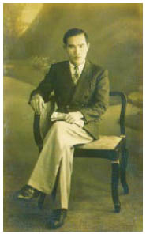

Ngôi nhà mà Cáo tìm thấy trong một rừng thông cách Champlitte không quá hai dặm, không có mùi quế lẫn mùi đường thắng chảy. Cũng không có bánh gừng dính trên tường, nhưng người ta chẳng cần đến bộ váy lông để đánh hơi ra được mùi phép thuật hắc ám bao bọc xung quanh ngôi nhà như một thứ mùi xấu xa. Jacob cần một phù thủy như Alma, nhưng Donnersmarck sắp chết đến nơi, và những mụ ăn thịt người có thể chữa lành ngay cả những vết thương nghiêm trọng nhất. Tốt hơn hết là người ta không nên hỏi thành phần có trong thuốc của họ.
Người phụ nữ mở cửa cho Jacob rất trẻ trung và xinh đẹp. Phần lớn những phù thủy hắc ám đều mang hình dạng như thế, kể cả khi họ đã hàng trăm năm tuổi. Họ đặt Donnersmarck lên chiếc bàn trong bếp để bà ta có thể kiểm tra vết thương của ông. Những móng tay của bà ta dài và sắc đến nỗi Jacob cảm thấy biết ơn rằng ông bạn anh đã bất tỉnh. Donnersmarck đã trả một cái giá quá đắt khi giúp đỡ họ, và Jacob không chỉ lo lắng về vết thương mà tay người hầu lốt hươu đã gây ra cho ông. Mụ phù thủy đã khẳng định nỗi lo sợ của anh. Khi Jacob mô tả cho mụ ta kẻ đã tấn công bạn anh, mụ lắc đầu, nở một nụ cười độc địa.
“Ta có thể cứu mạng ông ta,” mụ nói, “nhưng ta không thể tránh được việc có thể một ngày nào đó ông ta phải mang một cặp sừng. Các ngươi có thể ở tạm trong chuồng ngựa của ta. Ta cần ít nhất bốn ngày, và các ngươi phải trả hai cốc máu đổi lấy mạng cho ông ta.”
“Cẩn thận đấy!” Mụ chặn lời Cáo khi cô định phản đối. “Nếu không ta sẽ đòi thêm bộ váy đang nằm trong túi đeo yên cương của con ngựa quỷ ngoài kia. Ta chắc là nó mang đến cho cô một bộ lông đẹp đẽ.”
Mụ phù thủy cắt vào cánh tay Jacob thật chuyên nghiệp đến nỗi hai chiếc cốc đầy lên nhanh chóng. Rồi mụ xua họ ra khỏi nhà. Không một phù thủy hắc ám nào cho phép kẻ khác được chứng kiến khi họ phù phép. Cáo phải dìu Jacob khi họ ra ngoài đi về phía chuồng ngựa. Anh đã mất quá nhiều máu. Họ cột hai con ngựa quỷ vào gốc cây bên ngoài, nhưng Cáo mang chiếc túi đeo trên yên ngựa theo bên mình. Jacob đã tìm thấy bộ váy lông trong phòng của tay người hầu, và đến tận lúc ấy nỗi sợ hãi cuối cùng mới biến mất trên mặt Cáo.
Cô bắt mấy con ma trơi trước khi băng bó cánh tay cho anh trong chuồng ngựa tối mù. Đó là một cái cũi tồi tàn và tuyệt đối không phải là nơi anh muốn đưa cô đến sau khi đã ở trong căn phòng của tên yêu râu xanh, nhưng cánh rừng ngoài kia cũng chẳng phải là nơi thích hợp. Ta sẽ cần một vài ngày. Dĩ nhiên là Jacob muốn trở lại Vena càng nhanh càng tốt và bắt đầu cuộc tìm kiếm gã lai. Con bướm ma trên ngực anh chỉ còn thiếu hai vết đốm nữa thôi, và quả tim chẳng giúp ích gì cho anh chừng nào bọn Goyl còn giữ thủ cấp và bàn tay, nhưng họ không thể trả ơn Donnersmarck đã giúp đỡ bằng cách để ông lại một mình với mụ phù thủy ăn thịt trẻ con. Cây kim phù thủy đã ngăn cho ông khỏi chết vì mất máu trong nhà của tên yêu râu xanh, nhưng chẳng còn mấy sự sống sót lại trong cơ thể ông. Jacob không hé môi cho Cáo biết về cú cắn thứ tư trong mê cung của yêu râu xanh. Anh như trút được gánh nặng khi lại có cô bên cạnh mình, hít thở và vẫn lành lặn, rằng con bướm ma chẳng là gì ngoài một cơn ác mộng và cái chết là thứ gì đó họ đã bỏ lại sau lưng trong căn Phòng Đỏ của Troisclerq.
Cáo kiệt sức đến nỗi cô ngủ thiếp đi trước khi Jacob kịp giải thích cho cô vì sao anh cởi sợi dây chuyền đeo trên cổ một trong những cô gái đã chết. Có lẽ cô chưa bao giờ chú ý đến điều đó. Cô đã quá lo lắng rằng Troisclerq có thể phá hủy bộ váy lông.
Jacob nằm cạnh cô trong đống rơm bẩn thỉu, nhưng anh không tài nào chợp mắt. Anh lắng nghe nhịp thở của cô. Thỉnh thoảng một con rắn vua trườn vào trong chuồng, loại rắn chỉ có ở Lothringen. Nụ hoa lily đen trên đầu nó đáng giá cả trăm đồng vàng, nhưng Jacob chẳng buồn nhìn lấy một lần. Anh không muốn nghĩ đến những báu vật, cây nỏ thần hay cả việc có lẽ anh sắp phải chết. Cáo ngủ rất say. Khuôn mặt cô trông thật bình yên, như thể cô đã bỏ lại tất cả những nỗi khiếp sợ trong ngôi nhà của tên yêu râu xanh. Cô lại mặc quần áo đàn ông mà cô đã mặc trong chuyến đi đến Albion. Cô bỏ chiếc váy của tên yêu râu xanh lại bên cạnh những người chị em đã chết của mình. Jacob không thể hướng ánh mắt của mình khỏi khuôn mặt đang say ngủ của cô. Cuối cùng những hình ảnh đã ám ảnh anh suốt từ Vena cũng bị xóa sạch. Thật kỳ diệu là cô không bị thương tích gì, một phép màu sẽ trôi vào quên lãng. Không đảo tiên, không nước suối sơn ca, chỉ có một chiếc giường bằng rơm bẩn thỉu và hơi thở đều đặn của cô, nhưng không gì có thể làm anh thấy hạnh phúc hơn thế.
Jacob đã dành hàng năm trời tìm kiếm chiếc đồng hồ cát có thể làm ngưng đọng thời gian cho nữ hoàng, anh chẳng bao giờ có thể hiểu nổi tại sao nó lại được xếp vào hàng những báu vật được khao khát nhất trong thế giới sau gương. Anh không nhớ nổi có khoảnh khắc nào anh muốn làm ngưng đọng lại mãi mãi không. Tương lai luôn mang đến nhiều hứa hẹn hơn, và thậm chí một ngày đẹp trời nhất cũng sẽ tàn lụi chỉ sau vài khắc ngắn ngủi. Vậy mà giờ anh nằm đây, trong chuồng ngựa của một mụ phù thủy ăn thịt trẻ con, với cánh tay bị dao cắt và cái chết trên lồng ngực, và mơ ước về chiếc đồng hồ cát ấy. Anh xua một con ma trơi đến đậu trên trán Cáo đi - ma trơi thường mang đến ác mộng - và gạt mớ tóc đang rủ trên khuôn mặt say ngủ của cô.
Cái chạm nhẹ của anh làm cô thức giấc. Cô đưa tay ra sờ lên vết cắt mà lưỡi dao của Troisclerq đã để lại trên má trái anh.
“Em rất tiếc,” cô thì thầm.
Cứ như thể việc anh đã mù quáng và không bảo vệ cô trước Troisclerq là lỗi của cô. Jacob đặt ngón tay lên môi cô, lắc đầu. Anh không biết mình phải chuộc lỗi thế nào cho tất cả những nỗi sợ hãi và kinh hoàng mà cô sẽ không bao giờ quên. Sự thật rằng cả hai đều là con mồi của Troisclerq, và rằng chính họ đã mang đến cho Troisclerq cái chết mà có lẽ hắn ta đã trông ngóng sau từng ấy sự sống bị đánh cắp, cũng chẳng an ủi anh được mấy. Con người ta có thể trốn tránh cái chết lâu như thế ư? Có thể có nhiều sự sống đến thế sao? Điều đó thật khó tin trong một đêm như thế này.
“Em nghe mụ phù thủy nói rồi đấy,” anh nói nhỏ. “Chúng ta phải ở đây vài ngày. Vì vậy hãy ngủ thêm đi! Đây không phải là nơi tốt nhất, nhưng tất cả đều tốt hơn nơi chúng ta vừa thoát khỏi, đúng không?”
Cáo không trả lời. Ánh mắt cô lướt xuống ngực anh, nơi con bướm ma ẩn mình dưới lần áo sơ mi. Cô không quên cái chết. Jacob lấy sợi dây chuyền trong ba lô ra, anh đã lấy nó từ cổ của cô cháu gái Ramee. Cáo sờ quả tim đen với vẻ mặt không thể tin nổi.
“Một mũi tên bắn trúng hai con nhạn,” Jacob thì thầm với cô. “Một lúc nào đó anh sẽ kể cho em nghe toàn bộ câu chuyện. Nhưng giờ thì nghỉ ngơi đi.”
Cô trông tái nhợt. Anh cảm thấy như mình có thể nhìn thấu qua da cô.
Bên ngoài một con ngựa quỷ hí lên.
Cáo ngồi dậy.
Không gian yên lặng trở lại, nhưng là một sự yên lặng mang điềm gở.
Cô lao đến cửa chuồng nhanh hơn anh. Mắt anh không thể nhìn ra bất cứ thứ gì giữa những hàng thông tối đen, nhưng Cáo với lấy chiếc túi treo yên ngựa có bộ váy lông bên trong.
“Có ai đó ngoài kia.”
“Để anh xem.”
Cô chỉ lắc đầu. Jacob quan sát rừng cây trong khi cô khoác lên người bộ váy lông. Hai con ngựa vẫn không yên. Có lẽ chúng đánh hơi được mùi mụ phù thủy.
Không phải, Jacob.
Đó là một đêm không trăng, và anh không để ý cáo cái đã lao ra ngoài. Cửa sổ ngôi nhà mụ phù thủy vẫn sáng đèn. Một con chó đang sủa đâu đó.
Tại sao người lại để cô ấy đi, Jacob? Cô ấy quá yếu đuối! Anh như vẫn còn thấy ngay trước mắt mình chiếc bình chứa nỗi sợ hãi của cô dâng đầy lên đến tận miệng. Lại có tiếng chó sủa. Tay anh lần tìm khẩu súng. Anh sẽ theo chân cô khi bộ lông cáo cọ vào chân anh lần nữa.
“Bọn chúng ở đằng kia, bên trái giữa những hàng cây. Gã lai và năm tên khác nữa.” Cáo đẩy Jacob lùi khỏi cửa chuồng. Anh nghĩ anh vẫn có thể cảm thấy bộ lông trên bàn tay cô. “Anh có thể ngửi thấy mùi nam nhân ngư từ cách xa hàng dặm. Và bọn chúng có hai con chó săn.”
Chết tiệt. Gã Goyl đến đây bằng cách nào? Dường như Jacob không tài nào rũ bỏ được gã, như một cái bóng. Jacob sờ lên cánh tay băng bó. Đó là tay trái - cánh tay bên phía quả tim, như cách những phù thủy vẫn gọi. Đáng buồn thay đó cũng là tay thuận khi anh bắn súng và đánh nhau. Chưa kể anh mới bị mất máu, và cuộc chiến với Troisclerq vẫn còn ngấm trong xương cốt anh. Gã lai sẽ dễ dàng tước mất quả tim trong tay anh như trong tay một đứa trẻ.
“Có lẽ mụ phù thủy sẽ giúp chúng ta,” Cáo thì thầm.
“Hẳn rồi. Nhưng anh không thể chịu đựng nổi nếu mất thêm hai cốc máu nữa. Mà em đã quên nam nhân ngư rồi sao?” Mọi phép thuật của phù thủy đều vô dụng đối với họ như ngọn đuốc ném xuống ao.
“Em có thể thử xua chúng đi.”
“Không.”
Cô hiểu anh quá rõ đủ để biết rằng “Không” là kết luận cuối cùng.
Jacob nhìn ra mấy con ngựa quỷ. Kể cả nếu họ trốn thoát thành công - nhưng còn Donnersmarck thì sao?
Chết tiệt. Quả ít thời gian ở một nơi sai lầm.
Anh lấy quả tim đen ra khỏi túi. Cáo bước lùi lại khi anh đeo sợi dây chuyền lên cổ cô. Jacob gói hòn đá trong một mảnh vải, để nó không thể chạm vào cô.
“Cởi sợi dây chuyền ra khi em ngủ, và chú ý không bao giờ để hòn đá lên tim!” anh thì thầm với cô. “Mảnh vải chỉ bảo vệ được làn da em. Anh sẽ cố đánh lạc hướng bọn chúng cho em trong ít nhất một giờ.”
“Không!” Cô muốn tháo sợi dây chuyền ra, nhưng Jacob chụp lấy tay cô.
“Sẽ không có chuyện gì xảy ra cho anh đâu. Anh sẽ tự đầu hàng trước khi mọi việc trở nên quá nguy hiểm!”
“Rồi sau đó? Gã Goyl đã một lần cố giết anh đấy!”
“Không đâu, khi anh là cơ hội duy nhất cho gã tìm được quả tim! Em không được để bị bắt. Đến gặp lão Valiant. Hãy để lão lùn mặc cả với gã Goyl. Có một tháp canh bị bỏ không ở Thành Phố Chết, anh sẽ nói với gã Goyl em đang chờ ở đó...”
Cô tựa đầu vào vai anh.
“Mọi việc sẽ ổn thôi!” anh thì thầm với cô.
“Đến khi nào?” cô thì thầm. “Hãy cùng nhau cố gắng. Làm ơn! Khi bọn chúng nổ súng, chúng ta đã kịp leo lên lưng ngựa rồi!”
“Còn Donnersmarck?” Jacob phủi một con ma trơi bám trên tóc cô. Một chiếc đồng hồ cát. Một ngày nào đó anh sẽ tìm một cái. Nhưng khoảnh khắc này đã tan biến.
“Đi lối cổng sau.” Anh rút súng ra. “Bức tường đã mục cả rồi, em nhất định sẽ tìm được một lỗ hở.”
Cáo quay người đi, nhưng một lần nữa Jacob kéo cô lại.
Anh quàng cánh tay ôm lấy cô, vùi mặt mình trong tóc cô. Nhịp trái tim cô hòa nhịp trái tim anh.
Bên ngoài có gì đó động đậy giữa những hàng cây.
“Chạy đi!” Jacob thì thầm.
Bộ lông đỏ, chỉ một phút trước còn là làn da tái nhợt.
Cô đã đi, trước khi anh quay người lại lần nữa.